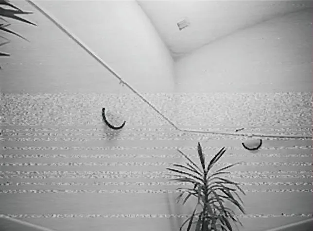
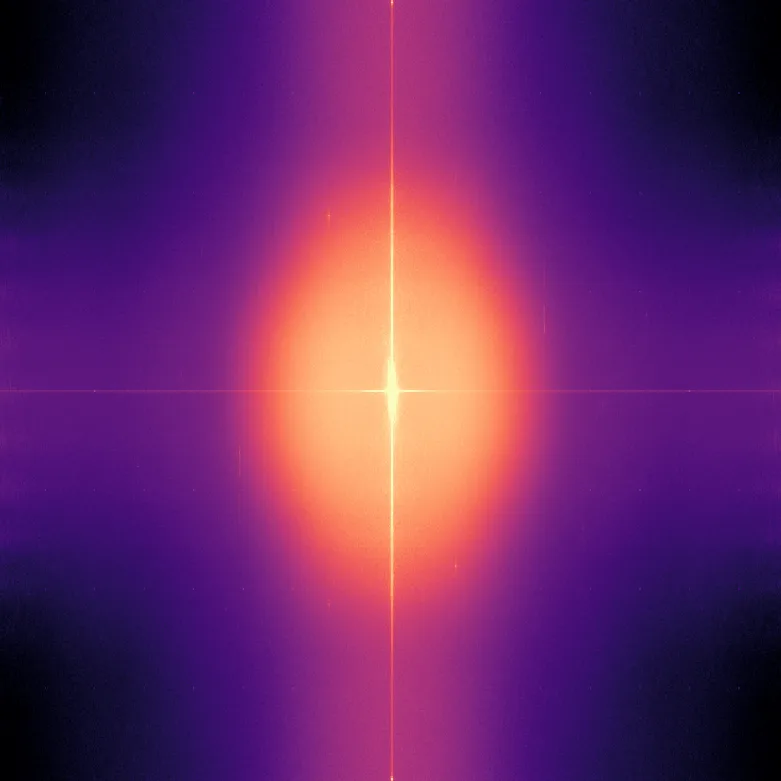
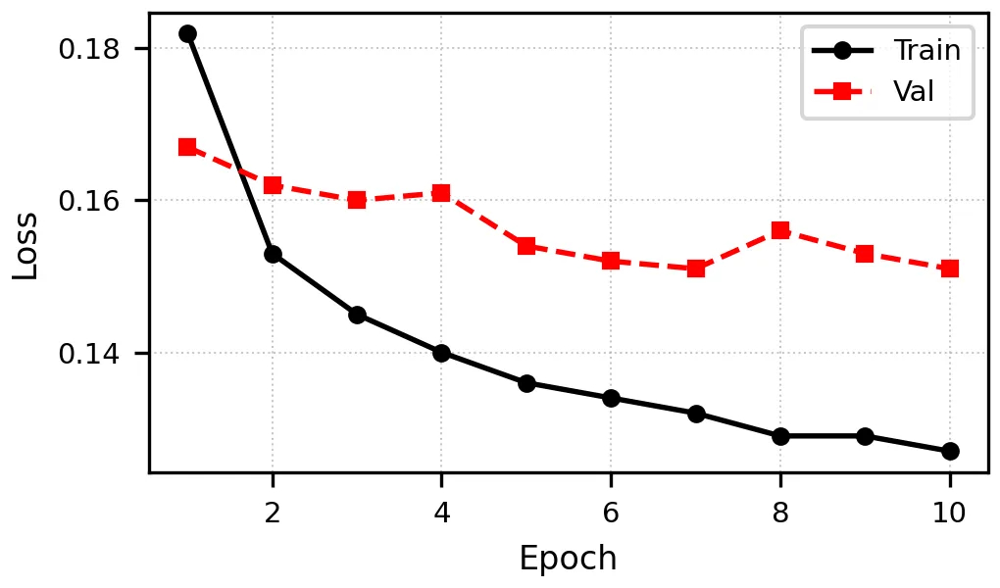
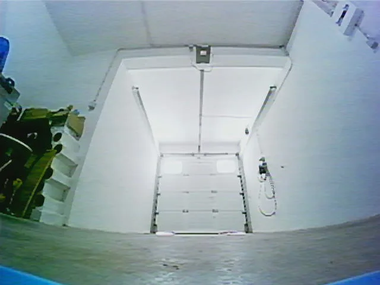
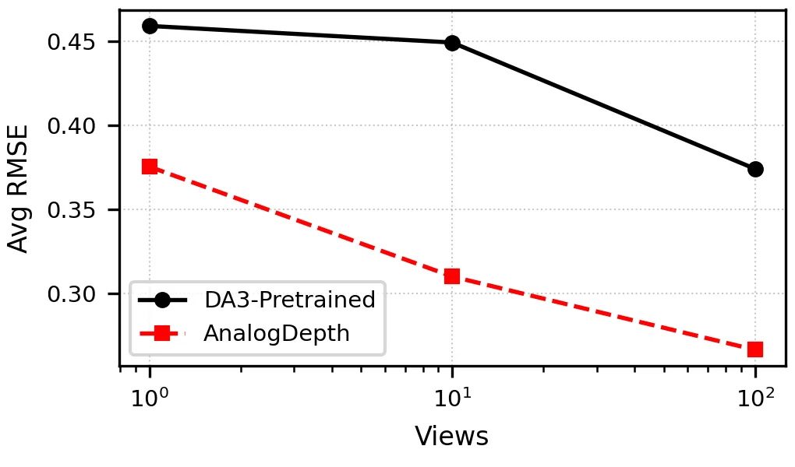

AnalogDepth：模拟视频传输下 FPV 无人机的多视图几何
AnalogDepth: Multi-view Geometry from FPV drones under Analog Video Transmission
在六段真实 FPV 飞行序列、三个室内场景上，真实噪声注入比 AWGN 和 PSD-matched Gaussian 更能降低深度 RMSE 与 3D 重建 Chamfer distance。
作者、单位与技术谱系 · Research context
作者与单位
研究脉络
- Depth Anything 3 / feed-forward geometry方法基座关系：本文把 DA3 作为几何基础模型，并针对 analog VTX 输入分布做适配。[arXiv 官方 HTML v1]
- 真实噪声建模与知识蒸馏方法上游关系：本文把真实传输噪声采样与 student-teacher adaptation 组合到 FPV 几何任务。[arXiv 官方 HTML v1]
合作网络
- AnalogDepth作者单位 → NOVA University Lisbon关系：共同署名/作者单位[arXiv 官方 HTML v1]
- AnalogDepthDA3 → AnalogDepth student model关系：明确技术依赖[arXiv 官方 HTML v1]
作者和单位是原文事实；技术脉络是基于公开原文/项目关系的解读；未据此推断导师或师生关系。
方法本质拆解 · What actually changed
是不是微调？
这是参数高效适配：在 DA3 的 DINOv2 backbone 中注入 LoRA，并用 student-teacher 训练。它不是只在测试时做图像滤波。
有没有额外约束？
额外先验是从真实 analog FPV 录像提取的空间结构噪声分布，以及 teacher 的几何输出。约束作用于输入退化建模和学生几何预测。
推理/后端到底做了什么？
推理仍是前馈几何预测，主要改变发生在适配后的模型权重和输入噪声分布。3D Chamfer 评估是输出验证，不是额外全局 BA。
方法本质是什么？
用真实传输噪声替代不匹配的通用 Gaussian 增强，让几何基础模型学到退化下的可恢复结构。直接效果是降低深度和多视图重建误差。
真实 FPV 观测 + 结构化噪声库/蒸馏约束 + LoRA 适配 DA3 → 更稳健的深度与多视图几何。

动机与问题Motivation
动机与问题
模拟传输噪声具有空间结构，标准数字噪声增强无法覆盖其频谱与纹理模式。对于 FPV 无人机，低延迟和低成本使这种退化仍然现实存在。
方法Method
方法总览
训练管线从真实静态 FPV 录像提取噪声库，比较 real-noise injection、PSD-matched Gaussian 与 AWGN。适配采用知识蒸馏，并把 LoRA 注入 DA3 的 DINOv2 backbone。
关键技术细节
模型保持教师/学生几何预测关系，同时让学生看到与真实模拟链路一致的噪声。评估不仅看 per-frame depth RMSE，也看多视图 3D reconstruction Chamfer distance。

实验Experiments
实验设置
测试覆盖 6 个真实 FPV flight sequences、3 个 indoor scenes；协议比较预训练 DA3、真实噪声、PSD-matched Gaussian 和 AWGN。指标包括 depth RMSE 与 3D reconstruction Chamfer distance。
实验数字与比较
已核验实验规模为 6 段飞行序列和 3 个室内场景；摘要明确称真实噪声训练持续优于预训练 DA3 及两种 Gaussian 噪声变体。精确 RMSE/Chamfer 数值待从正文表格核验。
消融/失败边界
噪声模型是核心 ablation：用 AWGN 或 PSD-matched Gaussian 替代真实 noise bank 会失去部分收益，原文精确变化需核表。未覆盖的摄像头、VTX、天气和动态场景可能使噪声分布外推失效。
局限与迁移Limitations & Transfer
局限与待核验
作者结论依赖真实噪声库与六段飞行数据，规模和场景多样性有限。LoRA rank、蒸馏权重、跨设备泛化和实时延迟尚待正文/代码核验。
与你研究路线的关系
可迁移模块是把传感器退化的结构统计直接纳入几何基础模型的可靠性适配。下一步可将噪声条件作为状态估计观测质量先验，联测深度不确定性、姿态漂移和重建尺度误差。
{kind=link}

{kind=link}

{kind=link}

{kind=link}
